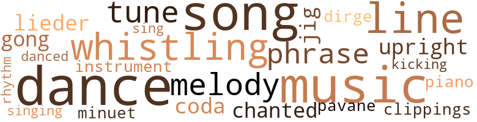

Ladies of the Rachmanioff Eyes, by Van Dyke, Henry (1965)
49 music-related terms matched in this text.
Most frequent terms in this topic: dance (6); music (5); song (5); whistling (3); line (3)
clipping.n.01
Definition: an excerpt cut from a newspaper or magazine
| word | sentence |
|---|---|
| clippings | The main trouble apparently , and the crux of the irritation , was that Jerome 's wife - according to Aunt Harry 's news clippings - was nee Walker . |
dance.n.01
Definition: an artistic form of nonverbal communication
| word | sentence |
|---|---|
| dances | I was not from another planet ; I read newspapers ; I skirted around tricky situations at school dances , in the drama club . |
| dance | A gust , now and then , lifted the sleeves of Mrs. Klein 's dressing gown , beating her softly about her face , and caught up in a dance were the faded blue folds at her feet . |
| dance | The carpet caught her slipper - a beach fluff with sheepskin - but she would not take heed of it , con - tinuing her half-step dance without one shoe , wav - ing her fingers in rivers of wind . |
| dance | And bit by bit his stone face cracked into wrinkles and he held those wrinkles there , as if a shield to the sight of Mrs. Klein 's tilting dance in the wind . |
| dance | Two satin arms , as though she were beginning a Martha Graham dance , went up in the air to em - brace Jerome as he came into the room . |
dance.v.03
Definition: skip, leap, or move up and down or sideways
| word | sentence |
|---|---|
| dance | I used to dance , but did I dance in the summer of thirty-three ? |
| dance | I used to dance , but did I dance in the summer of thirty-three ? |
| danced | PG danced a kind of four-step around Jerome 's legs as he phoned his secretary in Kalamazoo to cancel an invitation to a warlock . |
dirge.n.01
Definition: a song or hymn of mourning composed or performed as a memorial to a dead person
| word | sentence |
|---|---|
| dirge | " Come on , " Jerome said , and they both walked back into the dining room , in a dirge walk , to face Maurice LeFleur , to face Mrs. Klein . |
finale.n.01
Definition: the closing section of a musical composition
| word | sentence |
|---|---|
| coda | " To cope , " she ended , struggling for breath and thankful she 'd come to a respectable coda . |
gong.n.01
Definition: a percussion instrument consisting of a metal plate that is struck with a softheaded drumstick
| word | sentence |
|---|---|
| gong | I ca n't imagine what she expected - that perhaps he would spring down the staircase in swirling robes , beating a gong and saying hocus-pocus words ? |
jig.n.01
Definition: music in three-four time for dancing a jig
| word | sentence |
|---|---|
| jig | Doubling as chauffeur , yardman , every thingama - jig . |
kick.v.04
Definition: kick a leg up
| word | sentence |
|---|---|
| kicking | He seemed satisfied as he came down the lad - der , his patent leather heels kicking outwards into the moonlight as he - like a butterfly in a vest - de - scended . |
lied.n.01
Definition: a German art song of the 19th century for voice and piano
| word | sentence |
|---|---|
| lieder | This time she was two registers too high , and there was n't any melody to it whatsoever , but there was , except for the eerie lieder , peace for about ten minutes . |
melody.n.02
Definition: the perception of pleasant arrangements of musical notes
| word | sentence |
|---|---|
| melody | This time she was two registers too high , and there was n't any melody to it whatsoever , but there was , except for the eerie lieder , peace for about ten minutes . |
minuet.n.01
Definition: a stately court dance in the 17th century
| word | sentence |
|---|---|
| minuet | Aunt Harry and Mrs. Klein were behind him with sticks , toddling in housecoats - it looked like a speeded-up minuet , that pathetic little chase in the yard , in the dawn . |
music.n.01
Definition: an artistic form of auditory communication incorporating instrumental or vocal tones in a structured and continuous manner
| word | sentence |
|---|---|
| music | " Well , what 's all that longhair music business and them books written in French and them - " " You 're being stupid . " |
| Music | Although she would say , rather low and from one side of her mouth , " Aw , read them sonnets , honeybunch , read 'em , " she would at the same time take sips of Cherry Heering and then fidget with the radio to get the top ten songs on Afternoon Music Patrol . |
| music | Soon her voice sounded of music , high , fluted , as she talked in quick patches so that she might not disturb the oak wind . |
| music | " Sargeant . . . " she said in a low music . |
| music | As he passed I could have touched him , and then he walked to the west side of the house , the side where the pavilion house sat in the distance on the lawn , and he placed the ladder above the music room window . |
| music | Our house-thief-in-residence was spooning a pear when Bertram came up to the breakfast table and told us in heavy Polish accents about the ladder he found near the music room window . |
musical_instrument.n.01
Definition: any of various devices or contrivances that can be used to produce musical tones or sounds
| word | sentence |
|---|---|
| instrument | There was no telling from the nurse 's face the condition of Mrs. Klein 's blood pressure , but it could not have been far wrong , for she merely said , " Eat your soup , " and right away she left , dragging behind her the mysterious instrument . |
pavane.n.01
Definition: music composed for dancing the pavane
| word | sentence |
|---|---|
| pavane | Once it seemed she said " Moliere , " but for this I could not fashion a logic , but then I could not clearly think , standing as I was in enchanted fright , watch - ing the figures she made , the half circles of a somno - lent pavane , widi an oak-blown smile on her lips . |
phrase.n.02
Definition: a short musical passage
| word | sentence |
|---|---|
| phrase | " I 've - I 've bestowed favors - " Her archaic phrase seemed not to embarrass her as she paused ; she seemed puzzled , as though she could n't quite remember where it was from . |
| phrases | Then , up to the Chinese Chippendale , but not too close , she said , in careful phrases , " Come out of there , Harriet . " |
piano.n.01
Definition: a keyboard instrument that is played by depressing keys that cause hammers to strike tuned strings and produce sounds
| word | sentence |
|---|---|
| piano | She 'd be snapping at Bertram for not cleaning away cow dung ; yelling at Della for not dusting in the crevices of the piano legs ; she 'd be watering down Mrs. Klein 's breakfast rum ; and she would be sniffing at my French gram - mar book , complaining about my " bonelessness , " and complaining that Mrs. Klein was ruining me by sending me to Cornell instead of a sensible school right there in Michigan , and that , as sure as any - thing , Mrs. Klein was trying to make a white boy out of me . |
rhythm.n.04
Definition: the arrangement of spoken words alternating stressed and unstressed elements
| word | sentence |
|---|---|
| rhythm | One arm flapped in rhythm with the movement of his head , and the other carried a traveling bag . |
sing.v.02
Definition: produce tones with the voice
| word | sentence |
|---|---|
| singing | She was singing Della 's song , her hands and knees lost in the folds of her dressing gown . |
| sing | The beads continued their journey around the soup and she continued to sing Della 's song . |
song.n.01
Definition: a short musical composition with words
| word | sentence |
|---|---|
| song | Aunt Harry could n't wait for me to reach the other side of the long room , but when she got the ' message she tore it up , accompanied with great noise , into a million pieces , and began humming a song without words , or much melody , to show just how unperturbed she was . |
| songs | Although she would say , rather low and from one side of her mouth , " Aw , read them sonnets , honeybunch , read 'em , " she would at the same time take sips of Cherry Heering and then fidget with the radio to get the top ten songs on Afternoon Music Patrol . |
| song | Back and forth she touched the texture of the wind as she hummed to herself a song without words . |
| song | She was singing Della 's song , her hands and knees lost in the folds of her dressing gown . |
| song | The beads continued their journey around the soup and she continued to sing Della 's song . |
| song | " It 's Della 's song , " I told him . |
tone.v.01
Definition: utter monotonously and repetitively and rhythmically
| word | sentence |
|---|---|
| chanted | He chanted , beating his buttocks ( the red devil shorts had slid to his knees ) and stamping his feet as though he were a galloping horse . |
tune.n.01
Definition: a succession of notes forming a distinctive sequence
| word | sentence |
|---|---|
| line | Once on a windy March I was waiting in line at the Bijou to see Katharine Hepburn in a movie , and a ticket in - tended for a frail old man blew out from the ticket window and stuck to the leather of my jacket . |
| melody | Aunt Harry could n't wait for me to reach the other side of the long room , but when she got the ' message she tore it up , accompanied with great noise , into a million pieces , and began humming a song without words , or much melody , to show just how unperturbed she was . |
| tune | Aunt Harry increased her volume - the tune was somewhere between " Abide with Me " and " Waltz - ing Matilda , " but one could n't be at all sure . |
| tune | Although it was not a festive oc - casion , there was , none the less , an irreverent amount of gaiety on the part of Nature : red-winged birds cut free-verse poems through the air ; the graveyard grass grew vigorously green even as we stood upon it ; marble tombstones with round and pointed heads peeked up into the afternoon sun for acres around us to watch our ceremony ; a caretaker at the far south of us snipped a row of shrubs with silver shears , whistling a peppy tune ; Mrs. Klein was deep in a veil , and the sky was Sibelius blue . |
| line | I read every other line , skipped over lines , and she did not stir . |
| lines | I read every other line , skipped over lines , and she did not stir . |
| line | For one thing , her mouth was all wrong for ardor : it was such a severe red line - a cut , really , across her powdered face . |
upright.n.02
Definition: a piano with a vertical sounding board
| word | sentence |
|---|---|
| upright | During those weeks of reading sonnets ( until Mrs. Klein and Aunt Harry put a stop to it ) I rarely saw her walk or sit upright . |
whistle.v.01
Definition: make whistling sounds
| word | sentence |
|---|---|
| whistling | Although it was not a festive oc - casion , there was , none the less , an irreverent amount of gaiety on the part of Nature : red-winged birds cut free-verse poems through the air ; the graveyard grass grew vigorously green even as we stood upon it ; marble tombstones with round and pointed heads peeked up into the afternoon sun for acres around us to watch our ceremony ; a caretaker at the far south of us snipped a row of shrubs with silver shears , whistling a peppy tune ; Mrs. Klein was deep in a veil , and the sky was Sibelius blue . |
| whistling | Della was whistling How long , how long , have that evenin ' train been gone , and my ladies of the Rachmaninoff eyes were rem - iniscing , in their widowhood , beyond my reach . |
| whistling | The world in the living room was falling apart , but Della was still whistling in the back of the house , How long , how long , have that evenin ' train been gone . |
107 violence-related terms matched in this text.
Most frequent terms in this topic: spite (8); killed (6); kill (5); fight (5); hate (5)
aggravation.n.02
Definition: unfriendly behavior that causes anger or resentment
| word | sentence |
|---|---|
| provocation | She said it without provocation , without teasing , as though she 'd passed the time of day , and not even once did she look up from her mirror . |
anger.n.01
Definition: a strong emotion; a feeling that is oriented toward some real or supposed grievance
| word | sentence |
|---|---|
| anger | Della 's buttocks were rolling back to the kitchen , and she turned briefly , not in anger , but with - as though she had a kind of salacious itch , and she looked boldly at Jerome . |
| anger | Bertram frowned with anger . |
bleeding.n.01
Definition: the flow of blood from a ruptured blood vessel
| word | sentence |
|---|---|
| hemorrhages | All of them , Gideon told me , practically had hemorrhages right there in the car seat . " |
competitiveness.n.01
Definition: an aggressive willingness to compete
| word | sentence |
|---|---|
| competitiveness | Too often I was the target , or the funnel through which their frustrated competitiveness ran , and my dubious savior was Maurice LeFleur , whose very entrance into a room soothed their slashing tongues , flooded them with Light and Goodness . |
craze.n.02
Definition: state of violent mental agitation
| word | sentence |
|---|---|
| frenzy | I 'd intended to be strong about it ; I 'd see Hepburn and suffer , but when the ticket - and , oh , I rationalized it as being an Act of God - popped smack into me , I would not let the pathetic little man 's frenzy unbend me . |
| frenzy | It did seem logical , even in my frenzy . |
| frenzy | Yet there was not a sickly aura about her reclining posi - tions ; there were always bits of frenzy surrounding her chaise longue , her bed , for her hands did a thousand things ( fanning , picking chocolates ) ; her hands were as gay as bees always . |
destroy.v.04
Definition: put (an animal) to death
| word | sentence |
|---|---|
| destroy | I was again afraid to speak for fear I 'd destroy our new-found rapport . |
draw.v.23
Definition: pull (a person) apart with four horses tied to his extremities, so as to execute him
| word | sentence |
|---|---|
| draw | I 'm sure if you need to see it for a while I - " " And you can draw my bath now . " |
| drew | This was di - rected to Aunt Harry , who trembled , drew up her mouth in preparation for a retort that never came . |
fight.n.02
Definition: the act of fighting; any contest or struggle
| word | sentence |
|---|---|
| combat | For one thing , Aunt Harry seemed to be on the de - fensive throughout their needlepoint combat ; she seemed , in spite of her triumphant claim on Sar - geant , to be the loser , for it was not the tragedy of Sargeant 's sordid life that preoccupied their thought , but rather Aunt Harry 's betrayal of Sargeant . |
fight.n.05
Definition: a boxing or wrestling match
| word | sentence |
|---|---|
| fight | ( I was occupied with smoked oysters and quince with a glutton 's concentration , but I was a bit un - comfortable ; I never knew how much of the fight between the two ladies was real , how much was diabolical jest , how much was hate , how much was love . |
| fight | For instance , when he was having a fight and leaving Sargeant to go off with Mr. T. J. Colling - wood , he 'd fuss right in front of me like I was a piece of furniture . |
| fights | Had Mrs. Klein forgotten so soon the bickering and bantering , the fights ? |
| fight | There always was a fight over the rum , particularly the hot rum drinks Aunt Harry made on rainy days . |
fight.v.02
Definition: fight against or resist strongly
| word | sentence |
|---|---|
| fighting | " I 'm telling you , " I said , fighting down the bel - ligerence creeping up my throat . |
| fight | But they fight over him . |
| fight | " How are you going to fight that , Jerome ? |
fit.n.01
Definition: a display of bad temper
| word | sentence |
|---|---|
| conniption | " Come here and let me get that stuff off your jacket before your auntie sees it and has a conniption . |
| conniption | My nerves ca n't stand no conniption this evening . |
fury.n.01
Definition: a feeling of intense anger
| word | sentence |
|---|---|
| rage | I stood there in the middle of her living room basking in the irony of the whole Marx Brothers escapade , and the enjoyment must have shown from my face , for as she turned her head ( straight from the shoulders ) and looked at me her arms trembled , partly , I dare say , from the weight of the rod , but largely from sheer rage . |
| rage | I got up , my hands in a rage . |
| rage | The betrayal choked me and it put me in a rage . |
| fury | Although Aunt Harry 's fury and hysteria carried along with it a ring of honesty , Mrs. Klein said , " Nonsense , nonsense . |
| rage | His hands still groped along before him in the hallway , those hard - iron hands , as though he were blind , as though he were in a rage , as though he dared not trust his feet to navigate alone . |
| fury | With only a few half-hearted beatings of the wings on the stump at sundown , it was over , but it was at the moment that it was over that the fury without sound came : Peacock , head - less , now so blind , and its animation so delayed , scurried and fluttered and staggered in circles , spout - ing , at the point where its head once had been , dark rust blood in short jerks ; it percolated upwards , the blood , and it ran down its feathers and down its breast . |
| fury | In a very final fury the head - less bird ( and I could hear it screaming ! ) |
gag.v.06
Definition: cause to retch or choke
| word | sentence |
|---|---|
| choked | The betrayal choked me and it put me in a rage . |
gas.v.01
Definition: attack with gas; subject to gas fumes
| word | sentence |
|---|---|
| gassed | I have n't gassed with her in a co - in ages . " |
harm.v.01
Definition: cause or do harm to
| word | sentence |
|---|---|
| harm | Blood rushed up to my face and I wanted to do harm ! |
| harm | It might do me harm . " |
hate.n.01
Definition: the emotion of intense dislike; a feeling of dislike so strong that it demands action
| word | sentence |
|---|---|
| hate | ( I was occupied with smoked oysters and quince with a glutton 's concentration , but I was a bit un - comfortable ; I never knew how much of the fight between the two ladies was real , how much was diabolical jest , how much was hate , how much was love . |
hate.v.01
Definition: dislike intensely; feel antipathy or aversion towards
| word | sentence |
|---|---|
| hated | ( He was a cheap bastard ; I 've always hated him for that . |
| hate | " But , Oliver , I hate myself , I think . |
| Hate | Hate my - self for being such a coward . . . with Jerome 's mother . |
| hate | I like you , hate him , like you . . . killed himself , killed himself , killed himself . " |
| hate | " Regardless , I hate the very thought of those ghastly ginger things , " Mrs. Klein said . |
| hate | " I hate you , " Mrs. Klein hollered , her head now resting on the table top , her fists hitting the Irish linen around her head . |
| hated | I hated to treat her as though she were a child ; whatever she 'd been to me , she 'd never been a child . |
| hated | My delight was complete , for I took this request as a healthy sign , and I ran up to her room to get the poems I hated , but now , oh , now ! |
hostility.n.01
Definition: a hostile (very unfriendly) disposition
| word | sentence |
|---|---|
| hostilities | I had no idea when open hostilities began , but I 'd seen for days their sly rivalries . |
indignation.n.01
Definition: a feeling of righteous anger
| word | sentence |
|---|---|
| outrage | My surreptitious stance behind the hothouse wall ( as though I were in a wax museum ) , waiting for Maurice LeFleur to commit some outrage , became , little by little , em - barrassing : suppose I had not really heard him and he was , that very minute , cradling his earthenware head in a blissful snore ! |
infuriate.v.01
Definition: make furious
| word | sentence |
|---|---|
| infuriating | It was infuriating the way two perfectly twentieth-century people were making preparations to go along with LeFleur 's pranks . |
injury.n.01
Definition: any physical damage to the body caused by violence or accident or fracture etc.
| word | sentence |
|---|---|
| harm | So what 's the harm - as long as you get the jewelry locked up ? " |
| harm | " If you do one bit of harm to those ladies , Le - Fleur , that 'll be your ass . " |
kick.v.04
Definition: kick a leg up
| word | sentence |
|---|---|
| kicking | He seemed satisfied as he came down the lad - der , his patent leather heels kicking outwards into the moonlight as he - like a butterfly in a vest - de - scended . |
kick_back.v.02
Definition: spring back, as from a forceful thrust
| word | sentence |
|---|---|
| kicking | " Oh , for good - ness ' sake , " she said , kicking off her shoes , " let me get up there . " |
| kicks | Mrs. K kicks off one day and I get a two weeks salary and I go to cook and clean for - for who ? |
| kicked | He had kicked it with drunken , beefy power , and he shouted loud enough to be heard in town : " You goddamn priss-foot ! |
| kicked | He looked as though I 'd kicked him . |
| kicked | " Mrs. Klein kicked PG last Tuesday and Aunt Harry used the Lord 's name in vain when she broke a sherbet glass . |
| kicks | Ai n't it the kicks ? " |
kill.v.10
Definition: cause the death of, without intention
| word | sentence |
|---|---|
| kill | Della had said it and now she had said it ; it had a hissing sound when they said it , and it seemed too strong for anything to kill it . . . of course , we 're all cer - tain that , academically , you 'll do extremely well , but goodness , what a problem it 's going to be for you to adjust . |
| killed | I began eating in silence and that killed her , too . |
| killed | Judith said once that you were walking down Burdick once - " " It 's a lie , you know it 's a lie , I never even looked at another man 'til the day Gideon Gibbs killed his - self by working his fool head off . |
| kill | " If - if it 's a trick , I 'll kill you . " |
| kill | My watch said ten to three , so I supposed he 'd de - cided to kill time with Belle . |
| killed | I like you , hate him , like you . . . killed himself , killed himself , killed himself . " |
| killed | I like you , hate him , like you . . . killed himself , killed himself , killed himself . " |
| killed | I like you , hate him , like you . . . killed himself , killed himself , killed himself . " |
| killed | I knew what he thought , I knew what he said , I knew why he killed hisself . " |
| kill | I never knew it was so hard to kill time . |
| kill | Well , this will kill you : last week , CD an ^ BC P twiddling her beads at the VVT . |
| killing | Bertram was killing Peacock . |
knife.n.02
Definition: a weapon with a handle and blade with a sharp point
| word | sentence |
|---|---|
| knife | His one decision , like a very sharp knife , cut away a coarse husk to reveal a bright kernel . |
lynch.v.01
Definition: kill without legal sanction
| word | sentence |
|---|---|
| lynched | If Gideon did n't get caught and get lynched and got back to Chicago all in one piece , these fellows would treat him to dinners and drinks for a whole month . |
malice.n.01
Definition: feeling a need to see others suffer
| word | sentence |
|---|---|
| spite | Nevertheless , Mrs. Klein said , as she looked over my shoulder to Aunt Harry 's body , " She did it to spite me , Oliver , I know she did . |
| spite | This alone , in spite of her inaccuracies and mutila - tions , gave a chilling credence to her story , recited in a high , sermon voice . |
| spite | In spite of those put-on manners and all that big talk about Strinnervinsky and those pic - ture books of paintings by Frenchmen . |
| spite | Her protestations did not fool anyone ; we all knew it was true , more or less , in spite of Aunt Harry 's predilection for gild - ing a lily . |
| spite | But there was still an estrangement , in spite of the soothing words , and it was for this reason I be - gan to feel uneasy about Maurice LeFleur . |
| spite | For one thing , Aunt Harry seemed to be on the de - fensive throughout their needlepoint combat ; she seemed , in spite of her triumphant claim on Sar - geant , to be the loser , for it was not the tragedy of Sargeant 's sordid life that preoccupied their thought , but rather Aunt Harry 's betrayal of Sargeant . |
| spite | In spite of all my protestations that I was Oliver , Oliver , Oliver , and not this Sargeant person , there was now with the discovery of his mystery a void in what I 'd come to call my life . |
| spite | I came out to the edge of the pavilion house and forced my at - tention through a cluster of sassafras trees , through summer dusk , hoping , in spite of reason , that the ladies had won , that they had burst Jerome 's screen of prohibitions . |
molest.v.01
Definition: harass or assault sexually; make indecent advances to
| word | sentence |
|---|---|
| molesting | At midnight I heard him molesting Peacock . |
murder.n.01
Definition: unlawful premeditated killing of a human being by a human being
| word | sentence |
|---|---|
| murder | From Bertram 's lean face came no hint of the dark plan in his heart , no sign that he was coldly contemplating murder . |
musket_ball.n.01
Definition: a solid projectile that is shot by a musket
| word | sentence |
|---|---|
| ball | But he had all this talk about Chicago and how great it was and how I could have a ball almost anytime I wanted and how - " " Really , do n't you ever think about anything be - sides sex ? " |
| ball | I was sick of his " Oliver , old bean " and his " That 's the way the ball bounces " and his " That 's the way the cookie crumbles , " and his dirty jokes he brought me each week , and like clothes for the needy , they were worn , shabby , and used . |
| ball | " So , that 's the way the ball bounces . |
open_fire.v.01
Definition: start firing a weapon
| word | sentence |
|---|---|
| fired | " You 'll get fired , Della . |
punch.n.01
Definition: (boxing) a blow with the fist
| word | sentence |
|---|---|
| punch | " There 's some filthy punch we had for supper , " she said , returning to the sink . |
| punch | She sat down at the table across from me and smelled the punch . |
| punch | It was wiser to wash down the cold tongue with punch than to probe further ; her idee fixe , obviously , was there to stay . |
| punch | She was impatient and took my punch glass to the sink . |
rapier.n.01
Definition: a straight sword with a narrow blade and two edges
| word | sentence |
|---|---|
| rapier | My rapier had touched its mark : moderate in his vices , her son Mark was not . |
resist.v.04
Definition: withstand the force of something
| word | sentence |
|---|---|
| resist | Aunt Harry , though , had the fortitude to resist comment . |
rifle.n.01
Definition: a shoulder firearm with a long barrel and a rifled bore
| word | sentence |
|---|---|
| rifle | She laughed high , not her mahogany rifle shots , but high , and over the wind . |
sting.n.03
Definition: a painful wound caused by the thrust of an insect's stinger into skin
| word | sentence |
|---|---|
| bite | With a certain amount of bite to it , she said to Della , " Why , of course , dear , that 's what I mean . " |
| bite | Aunt Harry made a big thing over buttering her muffin and said , just before she took a bite , " It 'd be a good thing anyway , Etta , if you put more locks on your jewels . " |
stone.v.01
Definition: kill by throwing stones at
| word | sentence |
|---|---|
| stoned | You 're getting stoned , " I told him , and I 'm afraid indignantly , as though he had no right to get drunk . |
suicide.n.01
Definition: the act of killing yourself
| word | sentence |
|---|---|
| suicide | Anyway , he has n't the least notion why Sargeant committed suicide . |
| suicide | " All I know is since Sargeant 's suicide things have not been the same . |
| suicide | It would be generous to think that Mrs. Klein took to rum right after Sargeant 's suicide , but - ac - cording to Aunt Harry - Mrs. Klein leaned towards rum ever since Aunt Harry took up service with the Kleins some thirty-odd years ago . |
| suicide | Today it was die memory of Sargeant 's Sutton Place suicide . |
sword.n.01
Definition: a cutting or thrusting weapon that has a long metal blade and a hilt with a hand guard
| word | sentence |
|---|---|
| swords | This did not surprise me ; I was by now used to their chameleonic behavior : they could clash swords one minute and the next they would be kissing ; they could compose poison letters to each other one minute and request papal dispensations for each other the next . |
torment.v.01
Definition: torment emotionally or mentally
| word | sentence |
|---|---|
| torture | It was two years ago , at a time had I been caught smoking Aunt Harry would have used Chi - nese torture as a punishment , and it was during those months the doctor forbade Mrs. Klein to smoke or to use rum ( but , God knows , rum flowed on ) . |
| torture | Aw , come on , do n't torture old Della Mae like this , honey . |
twit.n.02
Definition: aggravation by deriding or mocking or criticizing
| word | sentence |
|---|---|
| taunt | And , too , over and over in my mind I heard Della 's taunt : you a fraidycat , you a fraidycat . |
violence.n.01
Definition: an act of aggression (as one against a person who resists)
| word | sentence |
|---|---|
| violence | When I finished , in my own good time , I shook him , tentatively at first , and then with in - creased violence until he gave a bit of a stir . |
weapon.n.01
Definition: any instrument or instrumentality used in fighting or hunting
| word | sentence |
|---|---|
| weapon | " When you get older " - and before she finished I wanted to protest ; I was pretty sick of that old chestnut , dropped by the aged ( Benson , Aunt Harry , and now Patricia Jo ) whenever they were in a tight spot ; it was a dirty ploy , this more-experienced - than-thou weapon used by elders to win the game when they were losing - " you 'll understand that one has to believe a little bit in almost everydiing . " |
| arms | Mrs. Klein 's black satin arms were around Aunt Harry , and Aunt Harry 's green cotton arms were around Mrs. Klein . |
| arms | Mrs. Klein 's black satin arms were around Aunt Harry , and Aunt Harry 's green cotton arms were around Mrs. Klein . |
| weapon | She advanced , taking the soup spoon with her as if it were her weapon . |
whip.v.04
Definition: strike as if by whipping
| word | sentence |
|---|---|
| lashed | This was almost a verbatim quote from Benson - a tutor I once had - but , unfortu - nately , it was a mistake , for her tongue lashed out from behind her cruel lips and her mouse eyes came to life . |
wrath.n.01
Definition: intense anger (usually on an epic scale)
| word | sentence |
|---|---|
| wrath | Admonitions and sneers came from her pony face , a face chock - full of wrath . |
wrestle.v.01
Definition: combat to overcome an opposing tendency or force
| word | sentence |
|---|---|
| wrestling | Sometimes , with a mouth filled with a bon bon , she would ask me to repeat a line or two and would interrupt me in the middle of it , as though she were wrestling with Ecstacy , and mur - mur : " Aw , read it , honey , read that thing ! |
68 religion-related terms matched in this text.
Most frequent terms in this topic: God (15); Christ (11); Jesus (5); Jew (4); Jews (3)
blessing.n.05
Definition: the act of praying for divine protection
| word | sentence |
|---|---|
| blessing | His deafness was both a blessing and an incon - venience , depending on his temperament at any given time . |
christian.n.01
Definition: a religious person who believes Jesus is the Christ and who is a member of a Christian denomination
| word | sentence |
|---|---|
| Christian | " Oliver , tell your aunt , " she said , absolutely giddy that she 'd remembered they were not speaking , " that I 'm not a Christian , thank God . |
church.n.02
Definition: a place for public (especially Christian) worship
| word | sentence |
|---|---|
| church | " When I 'm an old gray thing I can repent and pray and go to church and carry on with prayer meetings and all that , but now , now I 'm going to get some goodies out of life , and if this is the way I 've got to do it , then this is the way I 've got to do it . . . . |
confession.n.05
Definition: the document that spells out the belief system of a given church (especially the Reformation churches of the 16th century)
| word | sentence |
|---|---|
| confession | And now a confession : I 've done two highly dis - honorable things in my life . |
devil.n.03
Definition: a word used in exclamations of confusion
| word | sentence |
|---|---|
| dickens | Poor old thing felt duty bound to stop it , but he wanted it like the dickens . " |
| dickens | " All right , all right , " he said roughly , " what in the dickens you want him for anyway ? |
doctrine.n.01
Definition: a belief (or system of beliefs) accepted as authoritative by some group or school
| word | sentence |
|---|---|
| isms | These distortions , one suspected , crept into the fact of her narration as well , yet it was n't vaguely possible she could have made it all up : she spun too many decadent details , too many demimonde - isms for a god-fearing lady of her sheltered years . |
eden.n.01
Definition: any place of complete bliss and delight and peace
| word | sentence |
|---|---|
| heaven | " Oh , what I 'm trying to say is - Suppose Mother Klein , or your aunt , had a heart attack - and you know full well your aunt 's heart is in a bad condidon - or suppose the house caught fire , or heaven knows what ! " |
| Heaven | God gave some people money and talent and the right color skin , but when He came around to Della Mae , well , Our Father Who Art in Heaven ran out of supplies . |
| Eden | I sat as far away from LeFleur as I could de - cently manage and diddled with my poem , trying to fit " sequestered destiny " and " playground in Eden " into an iambic meter . |
| heaven | For somebody else you might be heaven , for Christ 's sake . " |
gentile.n.03
Definition: a Christian as contrasted with a Jew
| word | sentence |
|---|---|
| goy | Be a good goy and gemme little drinkie . " |
god.n.03
Definition: a man of such superior qualities that he seems like a deity to other people
| word | sentence |
|---|---|
| God | I learned some time ago that I could place my hands on her fiberglass hair and bury my face in her starchy collar - she was as tall as God ; I 'm six one - and murmur ( which I admit is a dirty trick ) : " Do n't fuss at me , Auntie , please do n't fuss at me . " |
| God | Harriet Gibbs , you must pray to God , " etc . |
| God | Thank God for old crabby Aunt Harry ! |
| God | It was two years ago , at a time had I been caught smoking Aunt Harry would have used Chi - nese torture as a punishment , and it was during those months the doctor forbade Mrs. Klein to smoke or to use rum ( but , God knows , rum flowed on ) . |
| God | God gave some people money and talent and the right color skin , but when He came around to Della Mae , well , Our Father Who Art in Heaven ran out of supplies . |
| God | " Oliver , tell your aunt , " she said , absolutely giddy that she 'd remembered they were not speaking , " that I 'm not a Christian , thank God . |
| God | It was the butler , Lorenzo , who an - swered , thank God , and not Patricia Jo . |
| God | " Oh , for God 's sake , Harriet , yes , that 's right . " |
| God | " It 's not that I 'm prejudiced or anything , God knows . |
| God | Just because he always calls you ' Mrs. Gibbs ' you think you must put him next to God . " |
| gods | Maurice LeFleur , a butterfly in a suit and vest of midnight blue , made an easy escape , a grin on his face as he turned to raise his free arm in courtly farewell , but - in absurd swiftness - as though the gods resented the Picasso loops of his lips , he stum - bled on the salt lick , fell on his face in the joe-pye weeds . |
| god | I waited at that ratty motel until god hjiows how long and 1 jiggered it made no sense to hang around and just spend more money . |
| God | God or somebody ? |
| God | God Almighty , this is why I 'll have a coronary thrombosis . |
| God | My ladies , however , were convinced , as though the hand of God touched them . |
| God | I suspected something il - licit for several days , but the alliance was n't , thank God , as grotesque as I at first believed it to be . ) |
| God | There 's cognac and God knows there 's rum . |
godhead.n.01
Definition: terms referring to the Judeo-Christian God
| word | sentence |
|---|---|
| Almighty | God Almighty , this is why I 'll have a coronary thrombosis . |
jesus.n.01
Definition: a teacher and prophet born in Bethlehem and active in Nazareth; his life and sermons form the basis for Christianity (circa 4 BC - AD 29)
| word | sentence |
|---|---|
| Jesus | She took one look , and said , " Oh , Jesus Christ , not again , " and turned sharply on her drumstick legs . |
| Jesus | And he asked me - oh , Lord Jesus , forgive me - not to never tell , never . |
| Jesus | Bertram would be choking up and crying , and of course to see him cry would be enough to start me up , and Jesus Christ , it had become a house of crying - Aunt Harry crying and shrill Patricia Jo crying and Della with gold piercing her ear crying , and Jesus , all I needed was for Bertram to start crying ... I took quickly to the window , to close the window , to set myself in action . |
| Jesus | Had I said Jesus Christ was an Eskimo , or that Paris is a trashy town , there would n't have been as much perturbation . |
| Jesus | But Jesus H. Christ , not this goddamn Chicago crook ! " |
jew.n.01
Definition: a person belonging to the worldwide group claiming descent from Jacob (or converted to it) and connected by cultural or religious ties
| word | sentence |
|---|---|
| Jew | I 'm a Jew . |
| Jew | He 's a Jew . " |
| Jews | Jews are as white as any - thing . |
| Jews | " No , silly , I do n't mean they 're colored or any - thing like that , but I 've been around , and I can tell you Jews are n't white-white . |
| Jew | I have n't seen a Jew Man yet who did n't move me . |
| Jew | Tell me , is this here Maurice LeFleur a Jew ? " |
| Jews | " AH Jews get cremated , do n't they ? " |
judaism.n.01
Definition: Jews collectively who practice a religion based on the Torah and the Talmud
| word | sentence |
|---|---|
| Judaism | " Dearest Harriet , you 're so ignorant about Judaism . |
messiah.n.01
Definition: any expected deliverer
| word | sentence |
|---|---|
| Christ | " Christ knows . |
| Christ | " Yes , she - " " Good Christ , Oliver , ca n't you say anything else but ' yes , she is , yes , she is ' ? |
| Christ | Good Christ ! " |
| Christ | She took one look , and said , " Oh , Jesus Christ , not again , " and turned sharply on her drumstick legs . |
| Christ | Jerome squeezed his mother 's wrist and said , " Good Christ , Mother , ca n't you be quiet just for a minute ? |
| Christ | Good Christ . " |
| Christ | Bertram would be choking up and crying , and of course to see him cry would be enough to start me up , and Jesus Christ , it had become a house of crying - Aunt Harry crying and shrill Patricia Jo crying and Della with gold piercing her ear crying , and Jesus , all I needed was for Bertram to start crying ... I took quickly to the window , to close the window , to set myself in action . |
| Christ | Had I said Jesus Christ was an Eskimo , or that Paris is a trashy town , there would n't have been as much perturbation . |
| Christ | Christ , what is this ? |
| Christ | But Jesus H. Christ , not this goddamn Chicago crook ! " |
| Christ | For somebody else you might be heaven , for Christ 's sake . " |
prayer.n.01
Definition: the act of communicating with a deity (especially as a petition or in adoration or contrition or thanksgiving)
| word | sentence |
|---|---|
| prayer | " When I 'm an old gray thing I can repent and pray and go to church and carry on with prayer meetings and all that , but now , now I 'm going to get some goodies out of life , and if this is the way I 've got to do it , then this is the way I 've got to do it . . . . |
| prayer | He sat in this po - sition so long that even I felt perhaps he was in some mysterious trance , but more logically I de - cided he was saying a very long prayer that he could pull off some credible fakery . |
| prayer | Aunt Harry and Mrs. Klein heard it all , for the study door was ajar , but they sat tall in their chairs , heads half bowed , in prayer attitudes , silent . |
religion.n.01
Definition: a strong belief in a supernatural power or powers that control human destiny
| word | sentence |
|---|---|
| religion | " I have n't the faintest notion what Mr. LeFleur 's religion is . " |
saint.n.02
Definition: person of exceptional holiness
| word | sentence |
|---|---|
| saint | And then Sargeant will become some kind of martyr , some kind of saint . |
| saint | Mark my words , he 'll turn into a saint . |
| Saint | Now , really , how can a sister see Saint Theresa suitably ? |
| Saint | He went down to Saint Louis for the day " ; and with a shrill jerk of her hand ( nails raspberry color , too ) she said , " Well , goodness , come in . " |
satan.n.01
Definition: (Judeo-Christian and Islamic religions) chief spirit of evil and adversary of God; tempter of mankind; master of Hell
| word | sentence |
|---|---|
| devils | I pulled him over on his back and undressed him to his un - derclothes ( boxer shorts with red pitchforks and red devils stamped on them ) , and went in to clear a path to Belle 's shower , i.e. , removal of books , a hot water bottle , candy boxes , a purple kimono , a shoe tree , and three ginger ale bottles . |
| devil | He chanted , beating his buttocks ( the red devil shorts had slid to his knees ) and stamping his feet as though he were a galloping horse . |
sermon.n.02
Definition: a moralistic rebuke
| word | sentence |
|---|---|
| sermon | Aunt Harry , who now indisputably had the floor , raised her voice in sermon tones and began her story . |
| sermons | Aunt Harry was irritatingly vague about much she had seen , and this , coupled with her tendency to preach little sermons , nearly obscured the whole point of her story . |
tone.v.01
Definition: utter monotonously and repetitively and rhythmically
| word | sentence |
|---|---|
| chanted | He chanted , beating his buttocks ( the red devil shorts had slid to his knees ) and stamping his feet as though he were a galloping horse . |
zen.n.01
Definition: school of Mahayana Buddhism asserting that enlightenment can come through meditation and intuition rather than faith; China and Japan
| word | sentence |
|---|---|
| zen | * We stood there in duet - he leaning forward , fro - zen , gripping the edge of the dresser , and I ready to escape down the hall should he make a break to - wards me . |